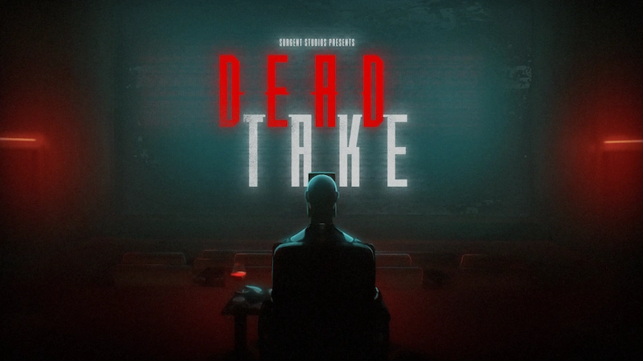
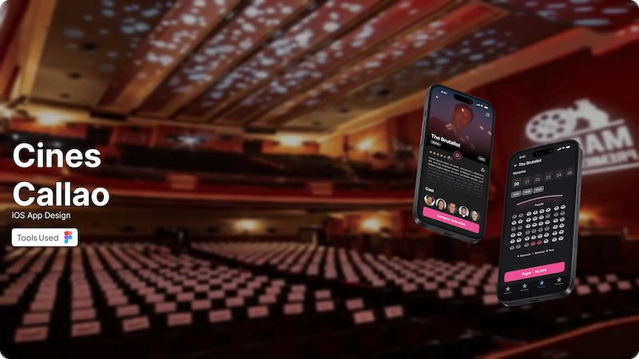
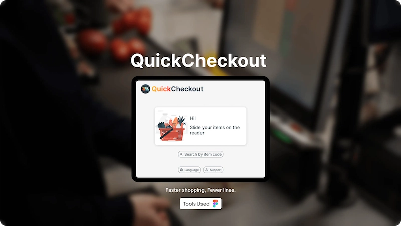
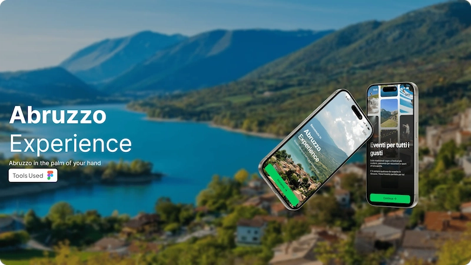
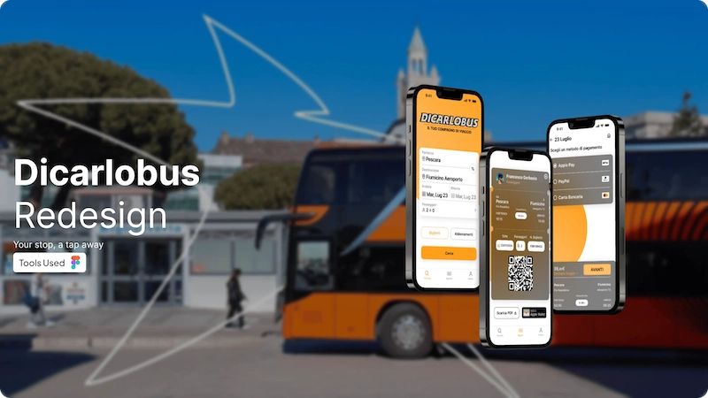

Hello, I'm Francesco
I spend more time choosing music than actually listening to it.
Currently
Localization QA - Universally Speaking
Previously at
UX/UI Designer - Freelancer

Nice to meet ya!
LQA
Red Dead Redemption
SHIPPEDContributed to the Italian localization of the latest versions of Red Dead Redemption, ensuring linguistic accuracy, tonal consistency, and adherence to franchise standards.

Dead Take
SHIPPEDWorked on the Italian localization of the horror game Dead Take, with a focus on linguistic accuracy, atmosphere, and player immersion.
UX/UI Design

Cines Callao
CASE STUDYSimplified ticket booking and schedule visibility for Madrid's most iconic cinema. Navigation time to booking cut by 30%.

QuickCheckout
CASE STUDYRedesigned e-commerce checkout experience. Compressed 4 steps into 1 view. Form errors reduced by 42% through inline validation.

Abruzzo Experience
CASE STUDYOne app connecting residents and visitors to activities across Italy's most underrated region. Dual persona onboarding, offline-first experience detail.

Dicarlobus Redesign
CASE STUDYBuilt a distinct brand identity from a generic shared template. Redesigned schedule visibility and ticket flow to WCAG AA accessibility standards.